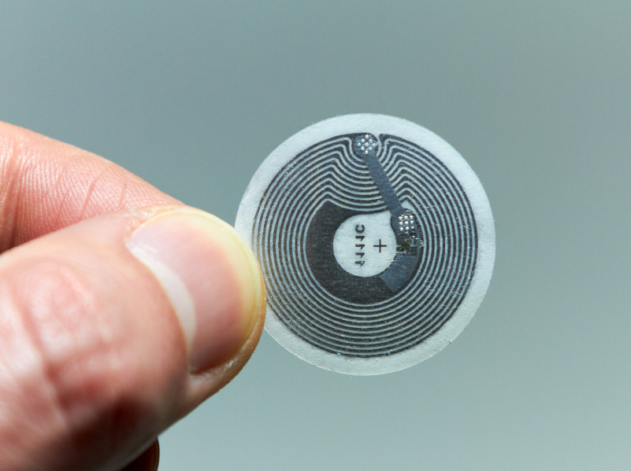
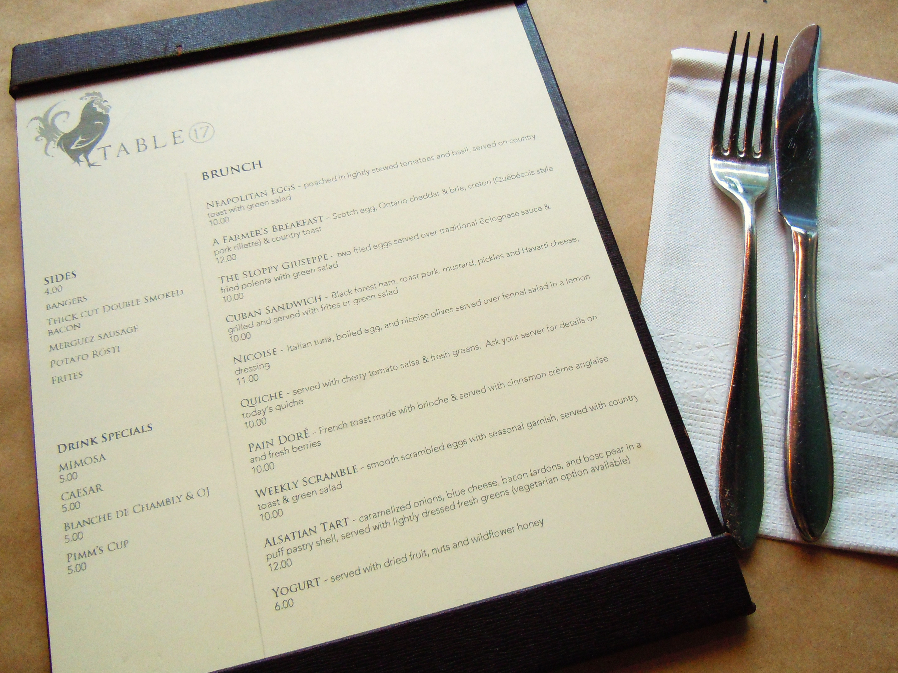

A Realtime Restaurant Management system
Using NFC and Cloud on Android
Presentation built with the awesome Reveal.js. Hint- Use arrow keys.
Abstract
We are almost two decades into the 21st century and the field of Computer Science astonishes us more and more every single day, with numerous projects from phones that you can build like the LEGO toys, part by part, to flying drones that deliver the packages you ordered online. Many new technologies arise every now and then and make things `smart` as goes the saying.
While that is the present scenario, the Restaurant is one of the few areas that hasn`t been touched by technology yet. Though innovations have taken over every other ounce of the Food Industry, the restaurants remain as blunt as they were in their inception. Our project, code named PROJECT DINEART, aims to automate activities inside and out of a restaurant and make mobile apps take care of everything from handling parking cars to bill payments at the end.

Data transfer between nfc tags and nfc enabled devices is done with the easy mechanism of tap to share.
An Existing System
The Traditional Restaurant System

Table Reservation (Conflicts and other problems now and again)

Long queues outside
Valet Parking (Time consuming)
Menu Cards (Can't be changed easily, wears off easily)

Ordering (A busy restaurant, more often than not, doesn't have waiters free to cater us)
Long waits (Frustrates you the most, right?)
Chef's work (Probably not so bad, but could use a more efficient way to handle orders)

Wrong delivery. (Oops. After all the time that you waited. Sigh.)
Bill Payment (Come on. The $$ bills are going away. NFC payment FTW!)
Another Existing System
A [not so] Smart Restaurant System
Right Click, Play. It's a video!
The Proposed System
A [truly] Smart Restaurant System
System Architecture
Modules
To make bookings. Easy as walk-on-cake. Anytime, Anywhere.
Valet module
To present user with new identity, record vehicle status. It knows when the customer is done eating and gets your car ready even before you step out.
Lobby module
To retrieve identity, check for bookings and allocate a free table. It also asks the customer to occupy the lobby if all tables are busy, and later sends an SMS as soon as a table gets free!
Server module
Tracks customers who've reserved tables, through GPS, allots tables for them as soon as they are near the restaurant's vicinity. Also, of course, stores and manages ALL DATA.
Table module
Displays Menus, orders, status of the orders, specials, coupons etc. (If you notice, changing the menu is as easy as SelectText-DeleteText-TypeNewText)
Bearer module
Notifies table occupancy, and receives and displays customer calls. (You just type 'Get me a spoon!' in the Table Application, and this guy will receive the request and the waiter will be with a spoon in no time!)
Kitchen module
Displays all orders collectively in a large display (typically an Android TV). Once done with an order, the Chef can just swipe the order out of the screen!
Payment module
Tracks each customer's expenditure, processes payments, notifies the Valet Module to get the car ready (if there is one, that is).